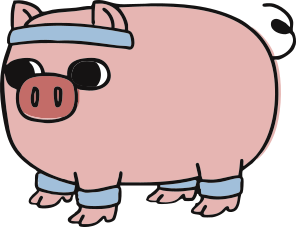

LIVRECampo Livre mostra aos jogadores de tenis quais campos estão livres ou não.
Ao chegar ao campo, o jogador sinaliza na app por quanto tempo pretende jogar.
Ao acederem a app, outros jogadores sabem quais campos estão ocupados e por quanto tempo.
Esta ferramenta foi feita pelos jogadores para os jogadores. A precisão dos dados depende inteiramente de seus utilizadores, e não obriga ou pressiona nenhum jogador.
Não é preciso login, não é preciso descarregar.
Guarda o Campo Livre na tua homescreen para voltares aqui com facilidade.
No iOS: Partilhar > Adicionar ao Ecrã de Início. No Android: Menu > Adicionar ao Ecrã Principal.
Fala connosco.
Tens sugestões, encontraste um problema ou queres adicionar um campo?
CONTACTO: early-serve-duffel@duck.com